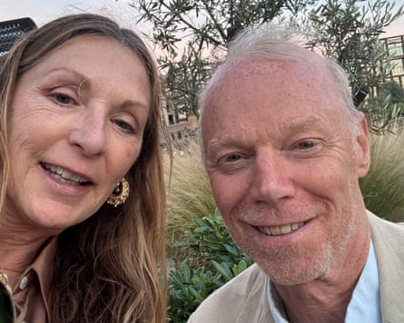

Rebecca on Michael
What were you hoping for? An interesting and sparky guy who had similar tastes and interests, and a sense of fun.
First impressions? A bit nervous, like me, and as we’d both got lost finding the place, we chatted about that initially.
What did you talk about? Working in the time of Covid. Changing careers and moving into more creative roles. We even touched on whether there are extraterrestrial beings visiting us … and agreed this is highly likely! I learned a lot about Michael.
Most awkward moment? I didn’t think to introduce myself and Michael had to ask me my name at the end of the date!
Good table manners? We shared our plates as expected, so yes.
Best thing about Michael? He’s open and honest, told me a lot about himself and seemed trusting.
Would you introduce Michael to your friends? If it was the right situation, but this seems unlikely.
Describe Michael in three words Low-key, calm and real.
What do you think Michael made of you? That I’m a Londoner who talks a lot.
Did you go on somewhere? No, it was chilly so we got the bill and headed to the station.
And … did you kiss? On a first date? Never!
If you could change one thing about the evening, what would it be? I’d have been wrapped up in a cosy jacket and felt warmer, or we’d have sparked off each other to keep warm.
Marks out of 10? 6.
Would you meet again? No, we didn’t have the necessary electricity between us.
Rebecca and Michael on their date.
Michael on Rebecca
What were you hoping for? A flirty, fun, lighthearted evening.
First impressions? Something about her reminded me of an old flame – I was instantly attracted.
What did you talk about? She set out her Extinction Rebellion stall. I subjected her to a rambling assessment of the current UFO narrative and the possibility of NHI (non-human intelligence).
Most awkward moment? I took a bathroom break. When I returned Becky had already asked for the bill, thwarting my plans for cheesecake. She had spotted some travel issues so wanted to get going.
Good table manners? Ladylike and assured.
Best thing about Becky? She is attractive, with a sureness that permeates everything she says and does.
Would you introduce Becky to your friends? Definitely.
Describe Becky in three words Assured. Petite. Mysterious.
What do you think Becky made of you? I was a nervous wreck to start, so she probably thought I was all over the place.
Did you go on somewhere? To Waterloo … turns out I had a one‑way ticket.
And … did you kiss? A hug goodbye at the ticket barriers.
If you could change one thing about the evening, what would it be? I’d remember how to flirt and she would have stayed for dessert and had ice-cream, à la Meg Ryan.
Marks out of 10? 8.
Would you meet again? I asked for her number but she declined. She didn’t think we had a connection.
Michael and Rebecca ate at Parrillan King’s Cross, London N1. Fancy a blind date? Email blind.date@theguardian.com